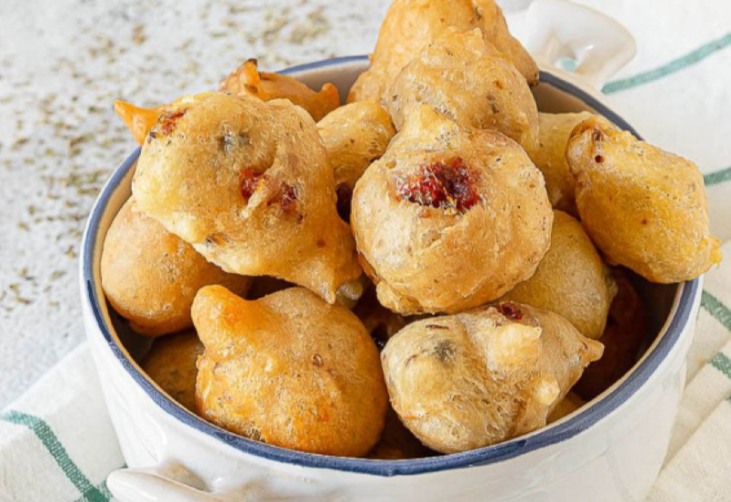
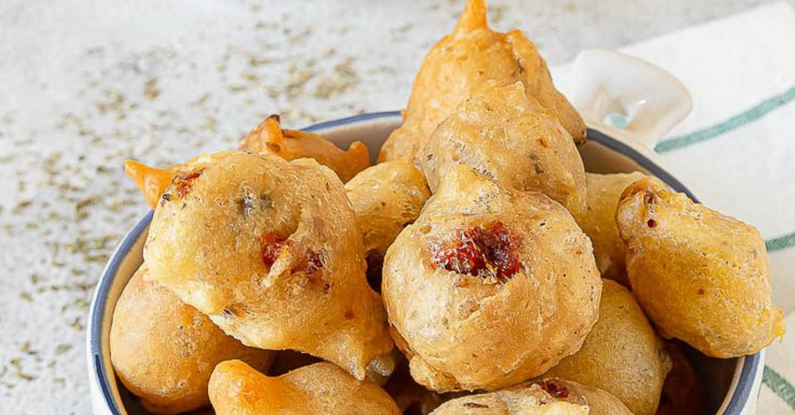

Antipasti
Sfinci con le acciughe:
- 500g di farina di grano duro
- 50g di sale
- 60g di lievito di birra fresco
- 300ml di acqua
- 3 cucchiaini di olio d'oliva
- 500ml di olio di semi di girasole


Procedimento:
- Per prima cosa, dissalate le vostre alici, fatele a pezzetti e tenetele da parte. In un piano di lavoro o su una spianatoia fate con la farina setacciata una fontanella e mettete la centro il lievito sciolto in un bicchiere di acqua tiepida, unite il sale (distante dal lievito) e iniziate ad imapastare. Unite l’olio di oliva
- Continuare a sbattere energicamente finché l’impasto si staccherà dal vostro piano di lavoro. Il vostro impasto deve risultare piuttosto fluido.
- Coprite il vostro impasto con un canovaccio o un foglio di pellicola e lasciatelo riposare per almeno quaranta, cinquanta minuti. Se avete fretta, raddoppiate le vostre dosi di lievito di birra fresco
- Non appena il vostro impasto sarà lievitato, prendete un pezzetto di pasta, bastano circa 30 g, ed inserire all’interno un pezzetto di acciuga. Fate bene attenzione a posizionare il pezzetto di acciuga al centro e chiudete bene la sfince.
- Lavoratela velocemente con le due mani,(aiutatevi bagnando le mani nell’acqua o nell’olio) in modo da darle una forma allungata (tipo crocchetta). Se pensate di utilizzare le vostre sfinci, come in questo caso ho fatto io, come finger food, fatele più piccoline, tipo a pallina, aiutandovi con un cucchiaino da caffè.
- In una casseruola dai bordi alti portate a temperatura l’olio per friggere, una volta raggiunti 170°C tuffateci dentro le vostre sfinci , con l’aiuto di due cucchiai. Fate dorare da entrambi i lati.
- Procedete friggendo poche sfinci per volta per non abbassare la temperatura dell’olio. le vostre sfinci sono pronte quando salgono a galla. Scolatele con una schiumarola e trasferitele su un foglio carta assorbente.
- Per assaporarle al meglio, servite ben calde le vostre sfinci con le acciughe. Buon appetito.